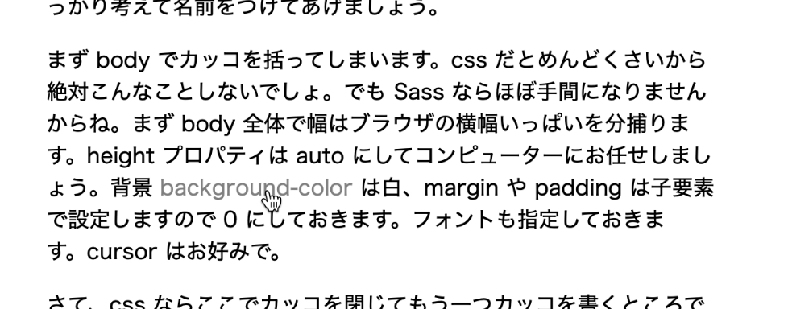
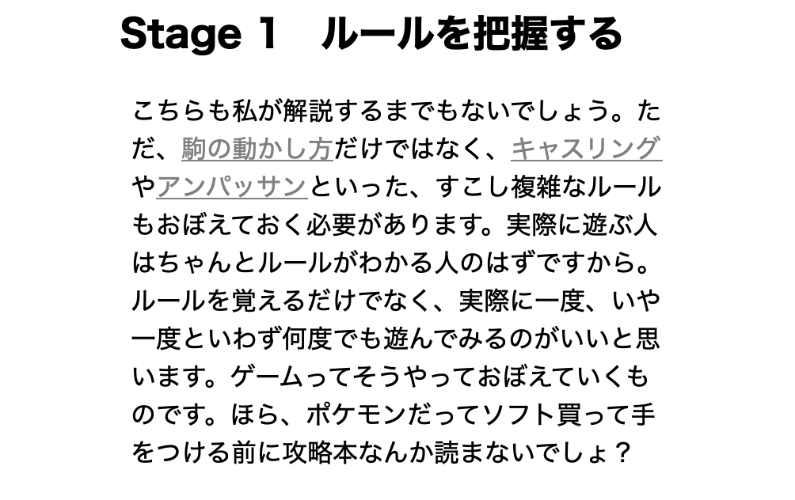

みなさま、ようこそ。
「とりあえずプログラミングを一通り覚えたけど、そのあと何すればいいかわからない」
こういう悩みに答えてくれる解説ってなかなか少ないですよね。プログラミング入門の解説は世の中腐る程あるのに。このサイトはそんな人に向けたものです。ですから、「えー、ことばがむずかしすぎてなにいってるかわかんないよー」という方、「ケッ、こんなお子ちゃまな解説で人をナメんのも大概にしろや」という方、両方いらっしゃると思います。
まず前者の方々は、下のリンク付近にある「必要な知識」というところを参考になさって、こうした知識を解説している参考書やサイトなどをご覧になってください。ある程度勉強したらこちらに再度いらっしゃって下さればよろしいかと思います。また、項目によってはこの解説の中で説明するものもございます。
「こんなの簡単すぎるぜ」という方々は、まずご自分でプログラムを組んでみてください。そして「ザマーみろ、オレのコードの方が優秀じゃねえか」と、優越感に浸る材料にしていただければと思います。そしてもし余力がございましたら、私が勉強するために少しレベルの高い解説を作っていただきたく存じます。
それではどうぞご覧ください。これであなたも いろいろ作れる。
CHESS
コマンド上でプレーのみならず棋譜の再現もできちゃいます。これで練習してヨーロッパ上流階級の優雅な遊びの心得を身につけましょう。
使用言語：Python
ステージ数：11
必要な知識
- フロー制御
- 関数
- リスト
- 文字列操作
- クラスとオブジェクト
- 正規表現 (Stage 5～)
- ファイルの読み書き (Stage 7～)
REVERSI
コマンド上でプレーできます。オセロという名前はどうやら登録商標らしいですが、ゴタゴタあってWikipediaでもちょっと面倒な扱いになってるようです。
使用言語：Python
ステージ数：7
必要な知識
- フロー制御
- リストの制御
- 文字列制御
- クラスの扱い
WEBSITE
GitHub Pages という GitHub でサイトを作る機能を使ってウェブサイトを公開するところまでやります。アップロードは GitHub アカウントを持っていれば無料でできます(つまりオール無料)。
使用言語：HTML, CSS
ステージ数：5
必要な知識
- HTML ファイルの書き方
- CSS ファイルの書き方
- GitHub の使い方(Stage 5〜)
2048
コマンド上でプレーできる 2048 です。盤面のサイズ変更やゴールの変更などもできます。
使用言語：Python
ステージ数：7
必要な知識
- フロー制御
- リストの制御
- 文字列制御
- クラスの扱い
MEMORANDOM
コードを書くに当たっての備忘録として上げておきます。決して初見さんが真っ先に見るものではありません。「この話の解説がないじゃないか」というのも、基本的には受け付けません。あくまでコーディングするに当たって「忘れたときのために」知識を残しておくものですからね。
所用言語：CSS/SCSS, HTML, Python
備忘録作成にあたって、パソコン版の方は解説本文の中でも単語にカーソルを合わせると形が変わって文字の色が薄くなると思います。下の例だと "background-color" ってところですね。
こうなったらクリックしてみてください。その言葉の解説にジャンプできます。
スマホ版ではこんな具合に若干薄く色がかかるようになっています。それを手掛かりに見ていただけるといいでしょう。
繰り返しになりますが、
初学者の見るものではありません。
その点お間違えなきよう。